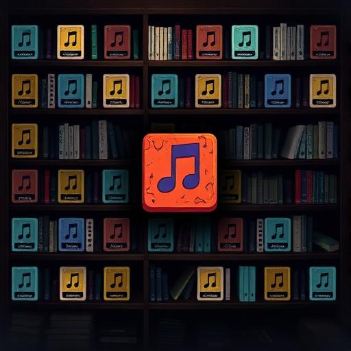

Working together
Bands, Roles & Rehearsals
A band creates a shared career around members who may have different skills, schedules and ambitions. The key systems—roles, repertoire, chemistry, rehearsal, gigs, travel, finances and agreements—exist to make that collaboration matter.

In brief
Find people whose musical roles and play style fit together, build a repertoire the group can actually perform, rehearse it, develop chemistry through shared activity, agree how decisions and ownership work, and keep schedules aligned around gigs, recordings and travel.
Joining or forming a band
Joining
Look beyond the band name. Check its genre, current members, ambitions, activity level and what musical role it actually needs.
Forming
Starting your own band gives you more control, but you must recruit the people and build the repertoire, reputation and organisation from the beginning.
Members and musical roles
Band roles describe what members are expected to contribute musically. They should line up with the actual instrument and performance skills in the game rather than being treated as cosmetic titles.
- Assign roles that reflect the member’s real musical capabilities.
- Review roles when the repertoire changes substantially.
- Do not assume one member can cover every part simply because they have high general progression.
- When recruiting, identify the missing capability before inviting someone.
Build a usable repertoire
Your repertoire is the pool of material the band can work with. Original songs create identity, while legitimate cover material can broaden live options. Whatever its source, material still needs to be familiar enough for the group to use confidently.



What rehearsals do
Rehearsal is shared preparation. It gives the group a way to work on the songs it intends to use rather than relying only on each player’s individual ability.
- Choose the material that matters next. Prioritise songs for upcoming shows or recording plans.
- Book time everyone can support. Rehearsals compete with travel, work, study and other scheduled activity.
- Build shared familiarity. Repeated work helps the band become more comfortable with the repertoire.
- Review readiness. Use the remaining time before the next major activity to address weak preparation rather than rehearsing blindly.

Band chemistry
Chemistry represents the value of becoming a functioning unit rather than a temporary collection of individual stats. Shared work and continuity can matter because players learn to operate together.

Membership changes can alter the feel and readiness of a group. That does not mean you should never change members—only that recruitment and departures can have consequences beyond filling a slot on a roster.
Decisions, agreements and money
As bands become successful, creative and financial relationships matter more. Where the game offers agreements, governance or contribution records, use them to make expectations explicit before valuable songs, releases, tours or income are involved.
- Know who wrote or co-wrote material.
- Understand any royalty or ownership split presented by the game.
- Keep band and personal money conceptually separate when paying for band activity.
- Use band decision systems rather than relying on assumptions for important choices.
- Review what happens to commitments if someone leaves.
A healthy band rhythm
A sustainable group alternates between creation, preparation and public activity. Constant gigs with no rehearsal can expose weaknesses; constant rehearsal with no shows creates no audience story; endless spending on equipment cannot replace songs and people.